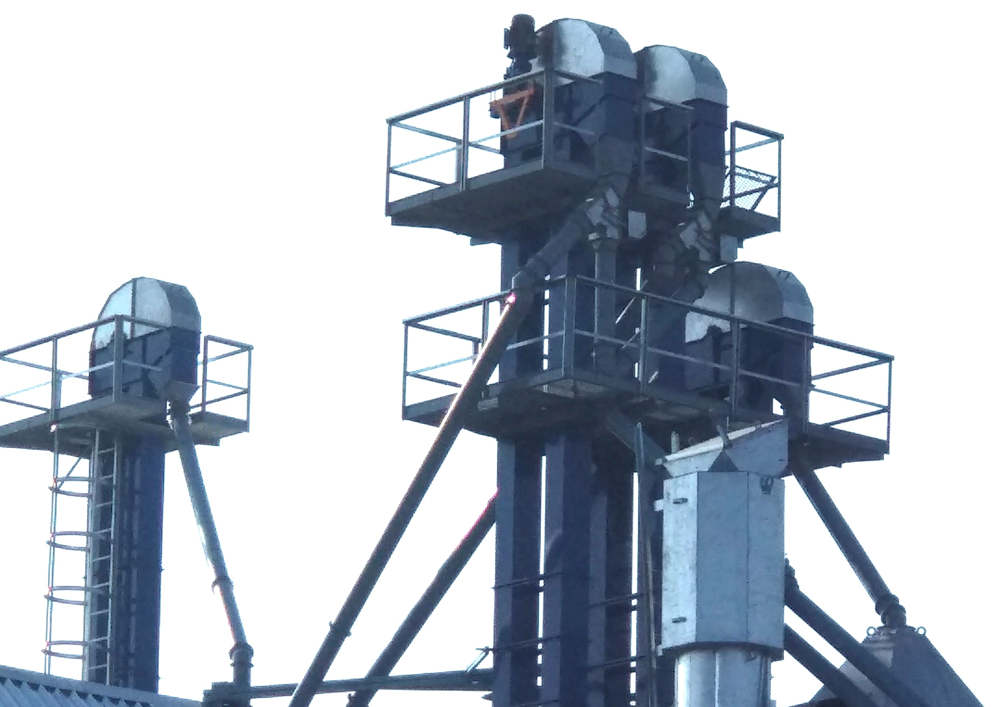

ЗЕРНОТРАНСПОРТНЕ ОБЛАДНАННЯ
Елеваторне обладнання для транспортування зерна
Компанія «Agro Star» пропонує повний спектр транспортних систем для вертикального та горизонтального переміщення зернових, олійних та бобових культур. Наше обладнання забезпечує дбайливе поводження з продуктом, мінімізуючи травмування зерна та енерговитрати підприємства.
Ми виготовляємо норії (ковшові елеватори) та скребкові транспортери різної потужності, що ідеально інтегруються в лінії сушіння та зберігання зерна.

Конвеєри ланцюгові

Конвеєри ланцюгові

Норії стрічкові

Норії стрічкові
Переваги нашого обладнання:
- Виготовлення з оцинкованої сталі високої якості;
- Використання мотор-редукторів європейських виробників;
- Полімерні ковші для зменшення травмування зерна;
- Датчики обриву стрічки та контролю швидкості;
- Вибухорозрядні панелі для безпечної експлуатації;
- Футеровка зносостійкими матеріалами в місцях найбільшого тертя.
Технічні можливості:
| Продуктивність норій | від 5 до 200 т/год |
| Продуктивність транспортерів | від 20 до 150 т/год |
| Висота підйому (норії) | до 45 метрів |
| Довжина транспортування | до 60 метрів |
| Тип ланцюга | Тяговий пластинчастий |
Гарантія: 12 місяців. Повний комплекс монтажних та пусконалагоджувальних робіт.